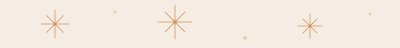
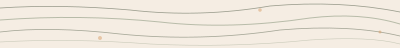

Alting is infrastructure for how communities organize, collaborate, and govern together — built from the bottom up.
The Problem
They optimize for extraction: spend, engagement, clicks, accumulation. The result is widening inequality, an epidemic of loneliness, echo chambers that fuel division, and eroding trust in institutions. AI will accelerate all of this exponentially.
Top-down is no longer working. Alting is the bottom-up alternative.
The Solution
Alting is infrastructure for self-governed, trust-based, democratic collaborations — each one called a Ting. A Ting can be anything people organize around.
Governance tied to personhood, not wealth or tokens. This is the load-bearing wall.
Non-convertible currency. Land in community trust. Utilities owned by members. Public capital, not private equity. Remove any one and the system can be captured.
Where current systems measure spend, clicks, and engagement — Tings measure what actually matters.
How It Works
Alting does not start from a platform and add users. It starts from a neighbor and builds outward — person to household, household to block, block to zone.
Each Ting uses a templated toolkit for trust-based collaboration, grounded in Elinor Ostrom’s principles for managing shared resources, Scrum’s iterative structure, the trust mechanics of rotating savings clubs used by billions worldwide, and the democratic traditions of Swedish member-driven associations.
One person, one vote. Transparent, self-governed, accountable. Where current systems measure spend, clicks, and engagement, Tings measure belonging, trust, safety, and financial security.
What Can Be a Ting

Neighbors governing their shared street — safety, mutual aid, disaster recovery. One person, one vote. The smallest unit of self-governance.
Local businesses co-designing the future of their shared corridor — public space, collective investment, local economy. One business, one vote.
Member-owned utility infrastructure with transparent governance — rates, maintenance, and emergency response decided by shareholders, not corporations.
Trust-based rotating savings — the same model used by billions worldwide through stokvels, tandas, and partnerhand. Peer-to-peer financial cooperation without banks.

Anti-speculation land protection governed by residents, community members, and public interest — housing and land that stay affordable, permanently.
Shared growing space managed collectively — from planter boxes on a block to neighborhood food production. A small-scale proof of what collaboration looks like.
Leave your email and we’ll share it with you when it’s ready.
No spam. No tracking. Just an invitation when the time comes.
We’ll be in touch when it’s time.
Have a question, want to write about Alting, or just want to say hello? We’d love to hear from you — general inquiries, press, and feedback all welcome.
“Civilization is to groups what intelligence is to individuals. It is a means of combining the intelligence of many to achieve ongoing group adaptation.” Octavia Butler, Parable of the Talents